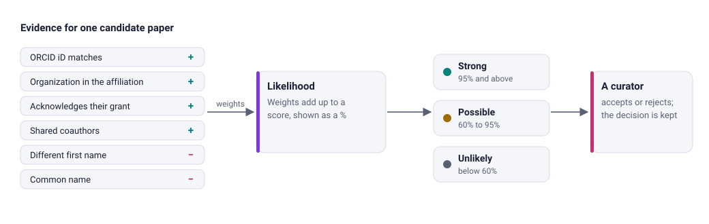
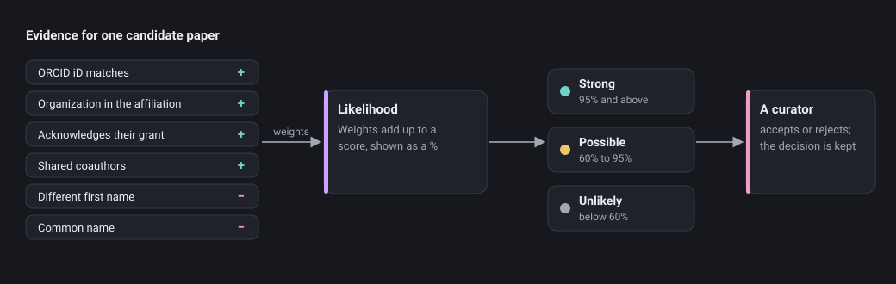
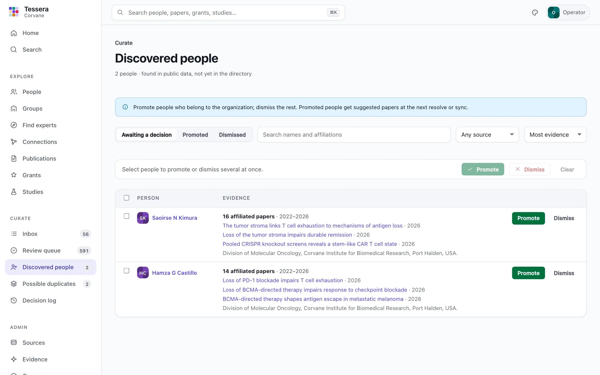
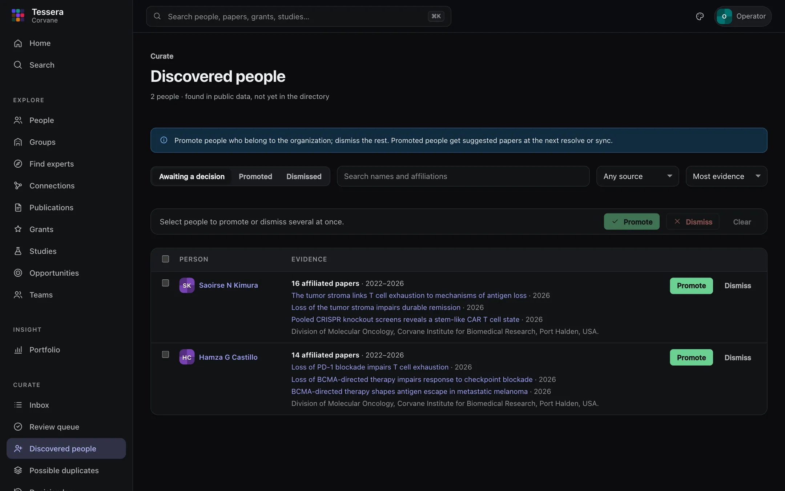
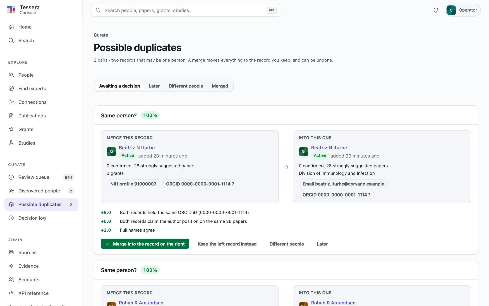
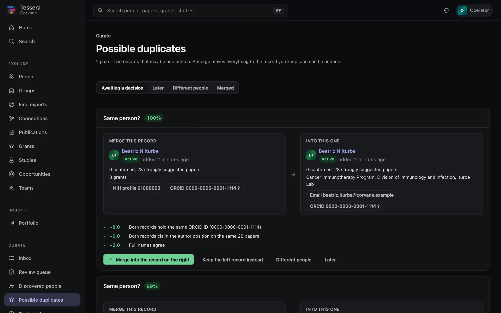
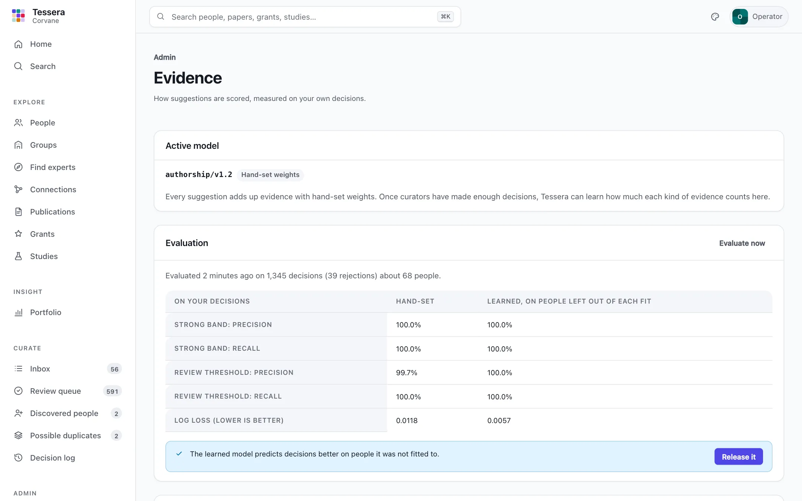
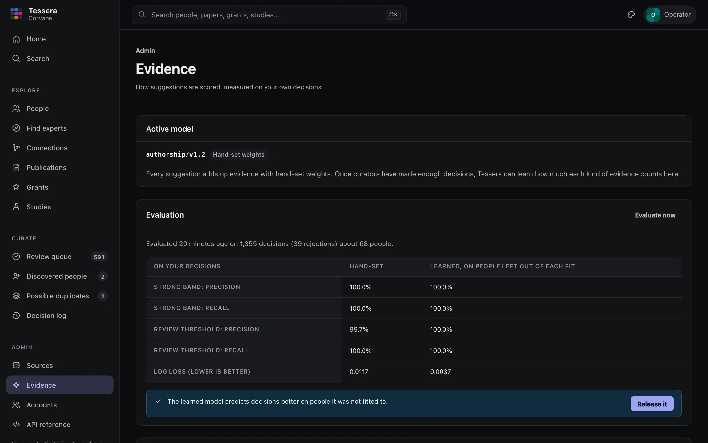

Curating
Tessera suggests; people decide. Every link between a person and a paper starts as a suggestion with a likelihood and the evidence behind it. Curators confirm or reject suggestions, and those decisions are permanent: later syncs add evidence but never change a decision. This guide covers the review queue, discovered people, and the tools around them.
How suggestions are scored#
For each person, Tessera looks at every paper with a compatible author name and adds up evidence for and against a match. Each item of evidence carries a weight and a plain-language explanation, for example:
- For: the author's ORCID iD matches the person's; the paper is listed on the person's public ORCID record; the same ORCID iD appears on the person's other papers; an email at your domain; your organization in the affiliation; the paper acknowledges the person's grant; coauthors who also appear on the person's other papers; the full first name matches; the paper's topics fit the person's work; a journal they publish in.
- Against: a different ORCID iD, or one you marked as not theirs; a different full first name or middle initial; the name is common (many people share it); the paper falls outside the person's career; another person in the directory is a better fit for the same author position.
The total becomes a likelihood, shown as a percentage, and a band:
| Band | Likelihood | Where it appears |
|---|---|---|
| Strong | 95% and above | First in the review queue, grouped by person |
| Possible | 60% to 95% | In the queue after strong matches, conflicts first |
| Unlikely | below 60% | Hidden unless you ask for them |
The thresholds are strong_threshold and review_threshold in [evidence]. Every suggestion, at every band, can be opened to see exactly why Tessera scored it as it did.




The review queue#
Open Review queue in the sidebar. Suggestions are listed on the left in priority order: strong matches first, grouped by person so they can be confirmed quickly, then possible matches with conflicting evidence, then ambiguous names.
The panel on the right shows the selected suggestion: the paper, the author list with the matched position highlighted and its affiliation on that paper, the likelihood, each item of evidence with its weight, and the history of decisions.


| Key | Action |
|---|---|
j or ↓ | Next suggestion |
k or ↑ | Previous suggestion |
a | Accept: this person wrote this paper |
r | Reject: someone else with a similar name |
d | Defer: decide later (leaves the queue, kept on the person's profile) |
u | Undo the last decision of this session |
o | Open the publication |
p | Only this person's suggestions, or everyone again |
? | Show these keys |
A decision takes effect at once: the item leaves the list, the next one is already loaded, and the decision is saved in the background. A note can be added before deciding with the buttons. The band selector at the top switches between strong, possible, and unlikely suggestions.
Accept all strong matches for a person. Strong matches for one person often number in the dozens. Accept all strong (beside the person's name in the list, or on the panel) accepts every strong suggestion for that person after you confirm. Each is recorded as its own decision, and Undo reverses the whole batch.
Discovered people#
Discovered people lists authors and investigators found in the data who are not in the directory: authors whose papers carry your affiliation but who match nobody you know, and co-investigators on your grants. For each, the evidence is shown: how many affiliated papers, over which years, recent titles, NIH grants, and the affiliation as printed.
- Promote someone who belongs to the organization. They join the directory, and their papers are suggested at the next
tessera resolveortessera sync. - Dismiss someone who does not. They leave the list and are not proposed again by later syncs.
Select several people to promote or dismiss them together. The Promoted and Dismissed views list past decisions, each with Undo or Restore.


On a person's profile#
- Review suggestions opens the queue for that person alone.
- Every paper, grant, and study carries a status mark; select it to open the evidence and accept, reject, defer, or undo.
- Add a publication attaches a paper the evidence engine missed, by its PubMed ID. Tessera fetches the paper from PubMed if needed and records it as confirmed, entered by you.
- The History tab lists every decision about the person's links.
- Identifiers lists the person's ORCID iDs and other identifiers, described in the section on ORCID iDs below.
- Memberships lists the person's units, with titles and dates, current ones first.
- Merge… folds another record of the same person into this one, or this one into it; see the next section.
- The profile opens on About, the sections the person keeps. A curator whose scope covers the person can keep them too, and choose what their public page shows; see Profiles.
Possible duplicates#
The same person sometimes has two records, typically one from a roster and one from grant records, when the roster row shares no identifier with the grant record. Possible duplicates lists pairs that look like one person, side by side, with the evidence: a shared identifier, the same author positions claimed on the same papers, agreeing names. A name alone never proposes a pair.
- Merge into… moves the left record's papers, grants, units, names, and identifiers to the record on the right, which is kept. Keep … instead merges the other way.
- Different people keeps the two apart; the pair is not proposed again. Later sets it aside.
- If both records had decided the same paper differently, the more recent decision holds, and the merge says so.
- A merged record's page says where it went. Undo merge, there or on the kept record's profile, restores both records exactly as they were. When several records were merged into one, undo the latest first: an earlier merge cannot be undone while a later one into the same record is in place. Decisions made on moved papers since the merge go back with them. A merged record's own Undo (for a promotion or dismissal) waits until its merge is undone.


- To merge two records Tessera did not pair, use Merge… on either profile.
ORCID iDs#
An ORCID iD is the strongest evidence Tessera has: a researcher's own identifier, printed on many papers. When an iD appears at a person's author position on at least two of their likely papers, Tessera suggests it on their profile, under Identifiers, with how many of their papers carry it and, once it has been read, what the public ORCID record says. Tessera never confirms an iD on its own.
- Confirm makes the iD the person's. From the next sync, papers carrying it match decisively, papers listed on the person's ORCID record count as strong evidence (and are fetched from PubMed if Tessera lacks them), and papers carrying a different iD count against.
- Not theirs keeps the iD on record as someone else's: it is never suggested again, and papers carrying it count against the person.
- Add records an identifier you have checked yourself (an ORCID iD, an email, or a local ID).
- Some people have two ORCID iDs. Each is suggested separately; confirm both. An iD suggested for the person is never treated as a conflict while it waits for a decision.
- If an iD is recorded for two people, both profiles say so; one of the records is probably a duplicate.
Every identifier decision appears in the decision log.
Learned weights and auto-accept#
Admin → Evidence shows how suggestions are scored and how well, measured on your own decisions. Curators can look; admins can change it.
- Evaluate now fits learned weights to your accept and reject decisions and compares them with the hand-set ones on people left out of the fit. Once there are enough decisions (200, with 20 rejections, about 5 people) and the learned model predicts better, Release it makes it active from the next sync; Use hand-set weights goes back.
- Auto-accept can be switched on only at a score where the evaluation measured at least 99% precision over at least 50 decisions. Each sync then accepts open suggestions at or above it that have no conflicting evidence. They are marked Auto-confirmed, appear as a batch on the page, are never used for learning, and a batch can be undone in one step (which also switches auto-accept off). Auto-accept, undoing a batch, and Accept all strong act only on links still as they found them: a decision someone makes while they run is never overwritten.
- From the command line:
tessera evidence status,evaluate,release,revert, andauto-accept --threshold 0.99 | --off | --undo BATCH.


The decision log#
Decision log lists every decision across the organization, newest first: what was decided, about which person and record, by whom, when, and with what note. Link decisions open their evidence, where the latest decision can be undone.
Decisions are never deleted. Undo is itself a recorded decision that restores the previous state, so the log always shows the full story.
What survives a sync#
- A decision locks the link: later syncs and rescoring never change an accepted or rejected status.
- If a source stops reporting a link (a grant drops a paper, for instance), the link is marked as no longer reported rather than deleted.
- Dismissed people stay dismissed; promoted people stay members.
- Search and lists reflect decisions on the next request. Topic summaries on profiles refresh at the next sync.
Who decides#
With accounts on, every decision is recorded under the name of the person who signed in, and each person decides only what their role allows: curators for everyone or for one unit or person, researchers for the suggestions about themselves (their queue is My suggestions). Without accounts (single-operator mode, on this machine only), every decision is recorded under the [server] operator name. See Accounts and sign-in.